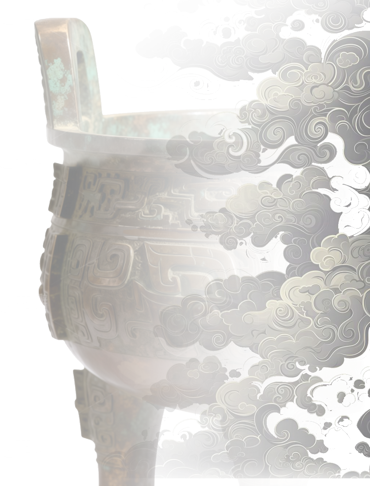

夏代 (约公元前2070-1600年)
中国青铜时代的开端。出现了简单的青铜工具和武器，但数量稀少，技术尚不成熟。
商代早期 (公元前1600-1300年)
青铜铸造技术迅速发展。郑州商城出土的青铜器显示了高超的铸造水平，爵、觚等酒器开始流行。
商代晚期 (公元前1300-1046年)
青铜文明的鼎盛时期。安阳殷墟出土的司母戊鼎重达832.84公斤，是世界最大的古代青铜器。
西周 (公元前1046-771年)
青铜器从酒器转向食器，鼎、簋等礼器成为等级制度的象征。铭文大量出现，记录了重要的历史事件。
春秋战国 (公元前770-221年)
青铜器风格从庄重转向精巧。错金银、镶嵌、鎏金等装饰工艺达到巅峰，兵器制造技术突飞猛进。
秦汉以后 (公元前221年以后)
铁器逐渐取代青铜器的实用功能，青铜器转向祭祀和装饰用途。铜镜成为主要的青铜制品。
